Why This Matters
🛡️ You're the first line of defense
If you approve an incorrect timesheet, Finance inherits the problem, and it's much more expensive to fix once it's reached a pay run.
💰 Employees aren't paid for unapproved hours
Approving late, or not at all, means your team member doesn't get paid on schedule. Rejected entries also don't sync to payroll or count toward overtime.
📅 Monthly review, monthly pay
Your non-US reports are paid monthly, but Rippling defaults them to a weekly timesheet cycle since no payroll schedule is attached. Review on a monthly cadence to match the pay schedule.
🏷️ Contract codes are your first check
A blank or wrong contract code is the single most common error Finance catches downstream, and the easiest one for you to catch first.
🎉 Holidays & leave don't self-correct
Rippling does not block an employee from clocking in on a holiday or an approved leave day; they'll be paid for both unless someone catches it.
🔁 Fix-and-resubmit, not fix-in-place
When you find an error, reject it back to the employee with a clear note. Editing it yourself removes their accountability and creates an audit gap.
⚠️ Key rule: a timesheet sitting unapproved at month-end delays payroll processing for that employee. Review on a schedule; don't wait for the deadline reminder.
Approval Review Process
Day View is the default when you open an individual employee's timesheet or timecard: hours broken out by calendar day, with your approve/reject actions right in the row. US employees are typically on a bi-monthly pay period; non-US employees are paid monthly. Either way, the review flow below is the same.
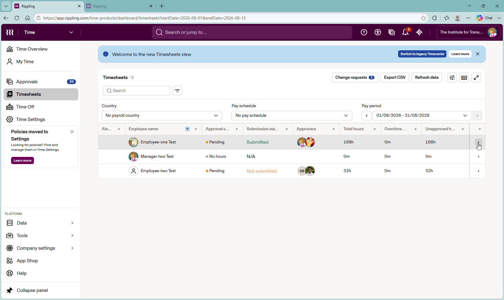
You'll see the list of employees to review, including your own timesheet, if you have one. Hover over an employee and select the > arrow at the far right of their row to open their Day View.
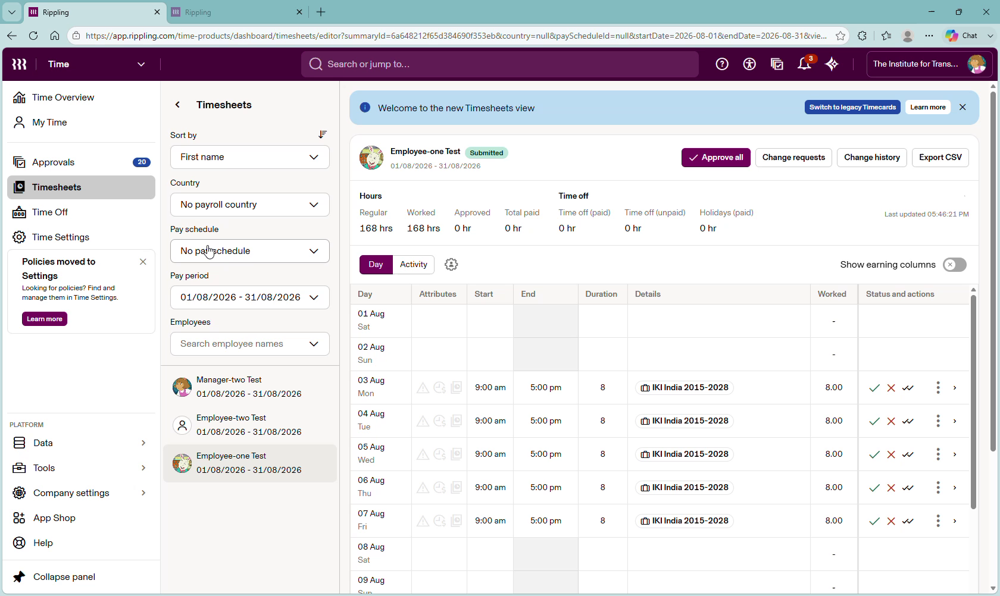
You may sort by first name or pay period, and filter by Country, Pay schedule, Pay period, and Employees.
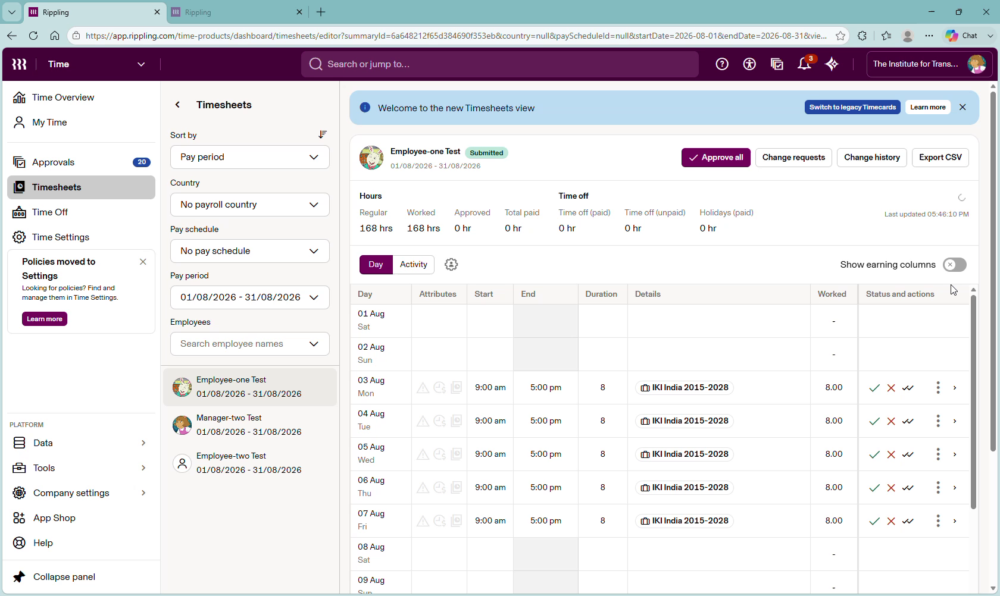
Confirm the timesheet has been submitted by the employee, and check for errors: time entered that exceeds 8 hours, or hours worked on a weekend, holiday, or time-off day.
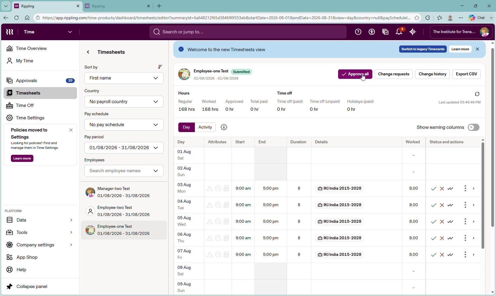
Once reviewed, select the green checkmark on each line entry individually, or choose Approve all at the top to approve the whole pay period at once.
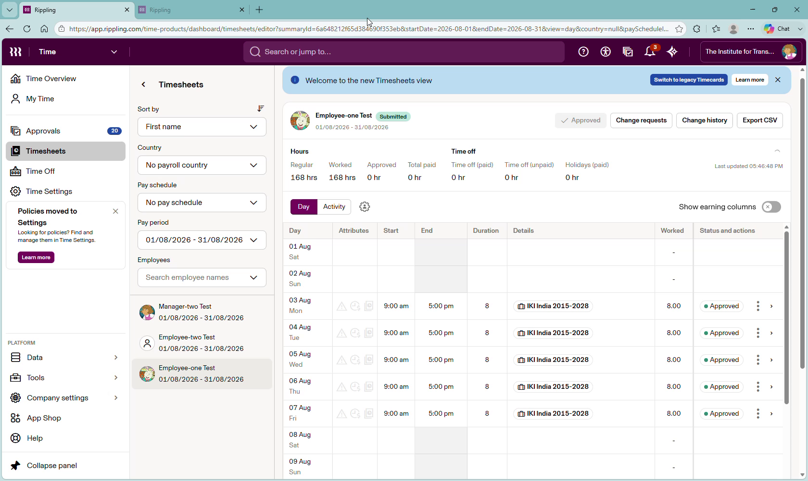
Each line item now shows Approved, and the timesheet approval process is concluded.
- Contract/job code is populated on every row: no blanks, no leftover defaults
- Total hours are within the expected range for the country/contract
- No regular hours logged on a country public holiday
- No regular hours logged on a day of approved leave
- Job codes align to the employee's actual project and region
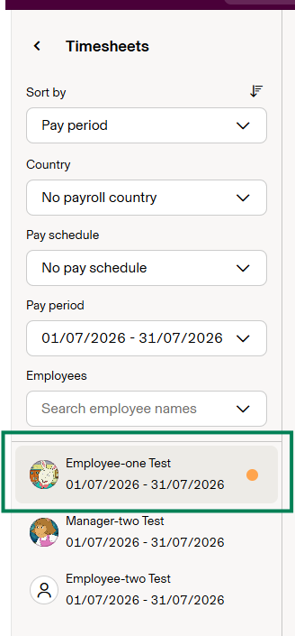
An orange dot next to an employee's name in the list is Rippling's signal that something on their timesheet needs your review.
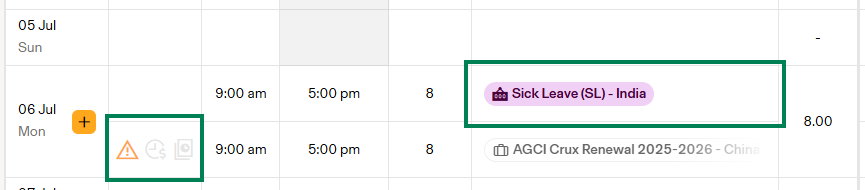
A full 8-hour regular entry on a day that also shows approved Sick Leave (or another time-off type); the leave should replace the regular hours, not sit alongside them.
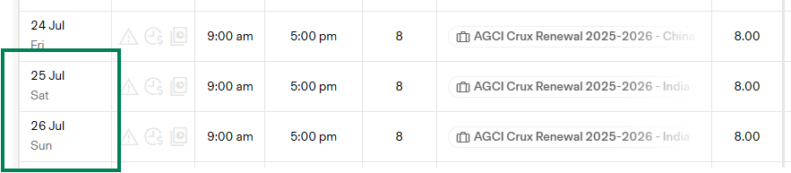
Regular hours entered on a Saturday and Sunday, worth a second look unless weekend work is expected for that role.
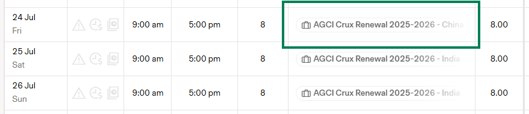
Compare the job code column row to row; one entry tagged to a different project/region than the rest is a sign it was picked incorrectly.
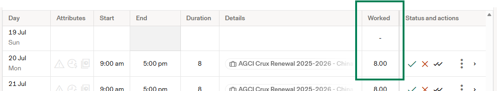
Scan the Worked column against the expected daily/weekly total for that employee's country or contract before approving.
Rejecting keeps an entry out of payroll and overtime math, but it doesn't disappear from the Total Worked Hours summary; if it needs to be fully gone, it has to be removed (Section 4). A pay run can still process with rejected entries present; only approved hours flow through.
Handling Corrections
Full walkthrough covering editing, commenting on, and removing time entries.
Every time entry gives you the option to approve or reject it directly from Day View; rejecting is how you send an error back to the employee with instructions to fix it.
- You'll be given the option to Approve or Reject a time entry.
- If you're rejecting because hours exceed 8 in a day, hours were logged on a holiday, weekend, or time-off day, or the job code is wrong, click the X icon on the far right of the time entry.
- Click the > button on that time entry and add a comment in the pop-out window.
- The employee gets an email notification and can see your comment, so they know exactly what to correct before resubmitting.
- Once the employee corrects the entries you flagged, go back through and approve them, then submit the timesheet for payroll.
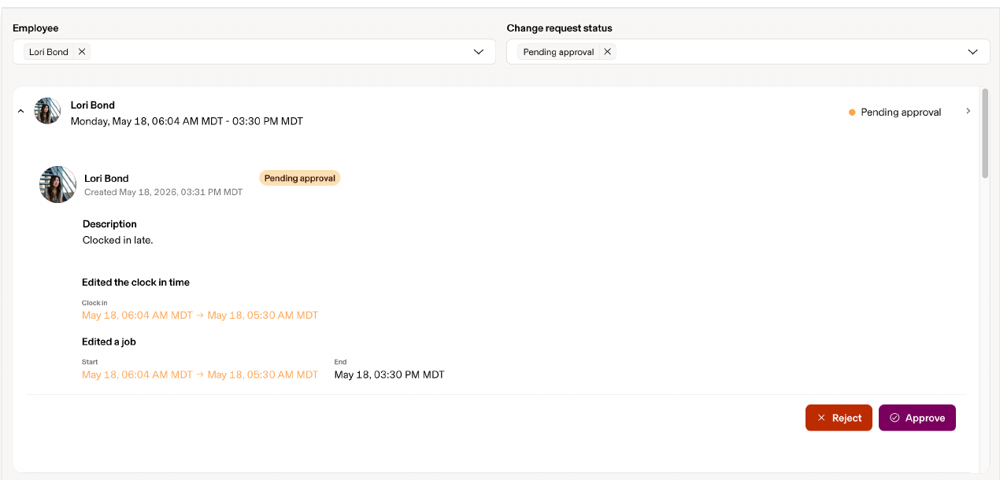
Rejecting sends the entry back with your comment attached, so the employee sees exactly what to fix before resubmitting it for approval.
You (or an admin) can edit or remove an unapproved entry directly. An approved entry can only be edited after restarting its approval process, which puts it back to Pending and requires everyone in the chain to re-approve.
Reject back to the employee with a clear note instead of correcting their entry yourself. Editing on their behalf removes their accountability for the mistake and creates an audit gap Finance will eventually ask about.
You cannot restart an entry's approval process if payroll for that pay period has already been approved but not yet paid out.
| Rejection reason | What to tell them |
|---|---|
| ❌ Missing or incorrect contract code | Point to the correct project/contract code. If they don't know it, that's an escalation to you first, not a guess on their part. |
| 🎉 Regular hours on a public holiday | Remove the regular hours; the holiday hours are already pre-filled by their holiday policy. |
| 🏖️ Regular hours while on approved leave | Remove the regular hours for that day. Once leave is approved in Rippling, it populates automatically; it shouldn't be hand-entered. |
| ⏱ Hours exceed the expected weekly threshold | Confirm whether overtime was pre-approved. If yes, ask them to add a comment noting that before you re-approve. |
| 🔁 "Existing entry overlaps with given closed entry" error | There's a conflicting entry that's already approved; have them check for a duplicate or overlapping shift on that day. |
You can't remove auto-populated holiday hours while the employee is assigned to the holiday policy that generated them. That's an admin-level change (removing them from the policy) with knock-on effects; don't do it just to fix one pay period.
Time Off
Three short recordings walk through the manager side of time off: from the general app tour to scheduling leave for your team to reviewing and approving requests. Watch these before your first time-off decision.
If an employee clocks in on a day they also have an approved time off request or a paid holiday, Rippling pays both; the system has no built-in block. Catching this is entirely on manual review today (and one of the exact patterns the Priority #2 exceptions report is meant to automate; see Section 7). Until then, cross-check hours against your team's leave calendar and country holiday list before approving.
Legacy View Approval Process
The Legacy Timecards experience is the older Rippling interface. While the new Timesheets experience is now the default for most teams, some employees and managers may still see the legacy format depending on rollout stage; the underlying approval logic is the same either way.
- Timecards default to a day-by-day grid; switch View as: Timeline for a horizontal view; same approve/reject actions apply
- Approve all approves every entry on the open timecard; it's greyed out for you unless you're the approver of record for every listed entry
- Override all is admin-only; it bypasses a multi-step approval chain even if earlier approvers haven't signed off
- Show only unapproved entries hides anything already approved so you can focus your review
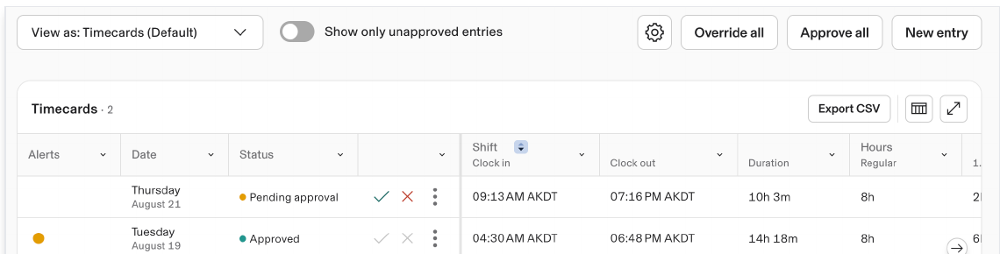
Legacy Timecards: per-row approve (green check) / reject (red X), plus bulk actions at the top of the list.
Additional Resources
- Time > Approvals.
- Select the Needs review tab > Timecards sub-tab.
- Check the box next to each entry you want to act on (or Select all).
- Click Approve or Reject at the bottom of the screen.
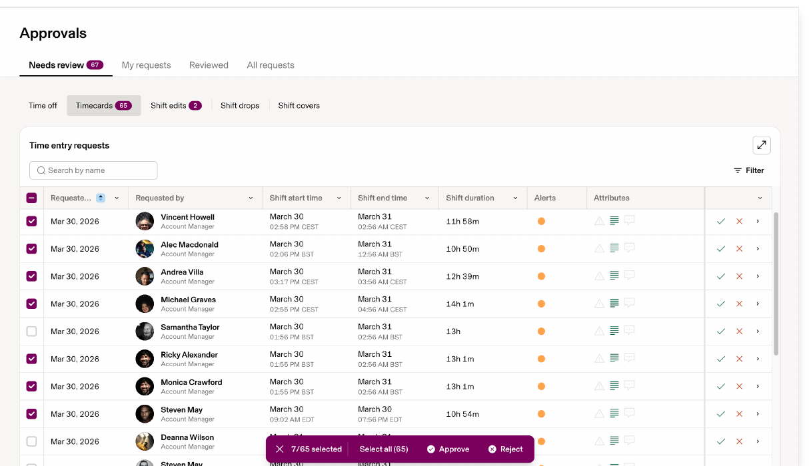
This still requires judgment on each flagged entry; it just removes the need to click into every employee's timesheet individually. You can also approve or un-approve timecards from the Rippling mobile app (HR > Time and Attendance > Timecards, toggle switch per entry).
Employee → You (their manager) → Super User / Payroll Admin → Finance is the last line, not the first point of contact for a timesheet error.
Per the Priority #2 roadmap, Finance is scoping a custom Rippling exceptions report to flag: missing contract codes, weeks exceeding 40 hours, country-holiday misalignment, regular hours logged while on approved leave, and projects not aligned to the employee's region. Once built, it will let regional managers and country directors self-serve their own oversight instead of routing everything through Accounting. Until then, the manual checks in Sections 3–5 above are the closest equivalent.